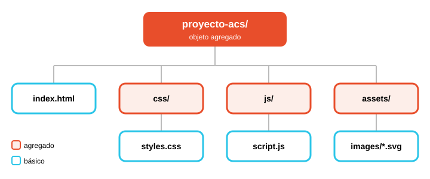
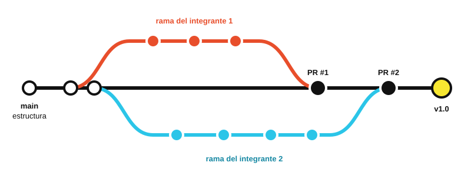

Ingeniería de Software · Capítulo 22
Administración de la Configuración del Software (ACS)
Cómo un equipo de desarrollo mantiene el orden cuando todo cambia: qué se identifica, cómo se controlan los cambios, cómo se guardan las versiones y cómo se comprueba y comunica lo que pasó.

Introducción
En cualquier proyecto de software el cambio es constante: el cliente pide algo nuevo, se descubre un error, el equipo mejora el diseño o cambia una tecnología. El problema no es que haya cambios, sino que ocurran sin control. Cuando nadie sabe qué versión es la correcta, quién modificó un archivo o por qué dejó de funcionar algo que antes funcionaba, el proyecto se vuelve caótico.
La Administración de la Configuración del Software (ACS), conocida en inglés como Software Configuration Management (SCM), es el conjunto de actividades que sirven para gestionar ese cambio durante toda la vida del software. No busca impedir que el software cambie, sino que cada cambio sea identificado, evaluado, registrado y comunicado.
Definición
La ACS es una actividad de protección que se aplica a lo largo de todo el proceso de software para identificar los elementos que pueden cambiar, controlar esos cambios, asegurar que se implementen correctamente e informar a todas las personas interesadas.
Conceptos clave antes de empezar
ICS
Ítem de Configuración del Software. Cualquier producto de trabajo que se controla: un documento de requisitos, un diagrama, un archivo de código o un caso de prueba.
Línea base
Línea de referencia. Un ICS que ya fue revisado y aprobado. A partir de ese momento solo puede cambiar mediante un procedimiento formal.
Repositorio
Base de datos del proyecto. El lugar donde se guardan todos los ICS, sus versiones y las relaciones entre ellos.
En este resumen se explica la sección 22.3: El proceso ACS, que describe las cinco tareas con las que se administra la configuración: identificación, control de versión, control de cambio, auditoría y reporte de estado.
El proceso ACS
Pressman explica que el proceso ACS es una serie de tareas organizadas que persiguen cuatro objetivos. Lo importante es que este proceso no tiene que ser burocrático ni pesado: debe ser lo suficientemente claro como para que el equipo sepa cómo actuar ante cualquier cambio.
- 1Identificar todos los ítems que, en conjunto, forman la configuración del software.
- 2Gestionar los cambios que se hagan a uno o varios de esos ítems.
- 3Facilitar la construcción de diferentes versiones de una aplicación.
- 4Garantizar la calidad del software mientras la configuración evoluciona con el tiempo.
Las preguntas que el proceso debe responder
Para cumplir esos objetivos, un equipo necesita respuestas claras a estas preguntas. Cada una se relaciona con una tarea de ACS:
| Pregunta | Tarea ACS que la responde |
|---|---|
| ¿Cómo se identifican los elementos individuales de la configuración? | Identificación |
| ¿Cómo se manejan las muchas versiones de un programa y su documentación? | Control de versión |
| ¿Cómo se controlan los cambios antes y después de entregar el software al cliente? | Control de cambio |
| ¿Quién aprueba y prioriza los cambios solicitados? | Control de cambio (ACC) |
| ¿Cómo se garantiza que los cambios se hicieron bien? | Auditoría de la configuración |
| ¿Cómo se informa a los demás sobre los cambios realizados? | Reporte de estado |
Cualquier cambio, incluso uno para mejorar, trae consigo incomodidades.
Las cinco capas del proceso ACS
De esas preguntas salen las cinco tareas de la ACS. Pressman las dibuja como capas concéntricas, igual que las capas de una cebolla (figura 22.4). Los ICS nacen en el centro y, durante su vida útil, se mueven hacia afuera atravesando cada capa, hasta formar parte de una versión del software (Vm.n).
No todas las capas se aplican siempre. Por ejemplo, un ICS nuevo siempre se identifica, pero si nadie pide cambiarlo, la capa de control de cambio no interviene.
Capa seleccionada
Selecciona una capa
Cada anillo representa una tarea de la ACS. Empieza por el centro (ICS) y avanza hacia afuera para seguir el recorrido de un ítem.
Identificación de objetos de la configuración
Sección 22.3.1
No se puede controlar algo que no tiene nombre. Por eso, el primer paso es nombrar cada ICS de forma única y organizarlo con un enfoque orientado a objetos. Pressman distingue dos tipos de objetos:
Tipo 1
Objeto básico
Una unidad de información creada durante el análisis, el diseño, la codificación o la prueba.
Ejemplos: una sección de la especificación de requisitos, el código de un componente, un conjunto de casos de prueba.
Tipo 2
Objeto agregado
Una colección de objetos básicos y de otros objetos agregados. Funciona como una lista con nombre de punteros hacia sus partes.
Ejemplo: una Especificación de diseño que agrupa el modelo arquitectónico, el modelo de datos y varios diagramas de clase.
¿Qué características identifican a un objeto?
| Característica | Qué significa | Ejemplo en este proyecto |
|---|---|---|
| Nombre | Cadena de texto que identifica el objeto sin ambigüedad. | css/styles.css |
| Descripción | Datos que indican el tipo de ICS, el proyecto al que pertenece y su información de cambio o versión. | Hoja de estilos · proyecto-acs · v1.0 |
| Recursos | Lo que el objeto usa, procesa o necesita: tipos de datos, funciones o variables. | Variables CSS como --naranja |
| Realización | Puntero al contenido real (la "unidad de texto"). En un objeto agregado es nulo, porque solo agrupa a otros. | El texto del archivo |
Relaciones entre objetos
Identificar también significa registrar cómo se relacionan los objetos. Con una notación sencilla se puede construir una jerarquía:
DiagramaClase <parte de> ModeloRequisitos
ModeloRequisitos <parte de> EspecificaciónRequisitos
ModeloDatos <interrelacionado> ModeloFlujoDatos
ModeloDatos <interrelacionado> CasoPruebaClaseMLa relación <parte de> crea la jerarquía. La relación <interrelacionado> conecta objetos de ramas distintas de esa jerarquía. Estas relaciones son muy útiles para analizar el impacto de un cambio: si se modifica el modelo de datos, se sabe qué otros objetos hay que revisar.
Ejemplo aplicado: nuestro repositorio

El sitio web completo es un objeto agregado. index.html, styles.css y script.js son objetos básicos. Git identifica cada versión de cada archivo con un código único (el hash del commit).
Los objetos evolucionan: antes de convertirse en línea base pueden cambiar muchas veces, e incluso después de ser aprobados siguen recibiendo cambios. El esquema de identificación debe tenerlo en cuenta.
Control de versión
Sección 22.3.2
El control de versión combina procedimientos y herramientas para administrar las distintas versiones de los objetos de configuración que se crean durante el proceso de software. Gracias a él se puede volver a cualquier estado anterior del proyecto o construir una versión específica cuando se necesite.
Capacidades de un sistema de control de versión
Repositorio
Base de datos del proyecto que guarda todos los objetos de configuración relevantes.
Gestión de versiones
Guarda todas las versiones de cada objeto, o las reconstruye a partir de las diferencias con versiones anteriores.
Facilidad de construcción
Reúne los objetos correctos y construye una versión específica del software.
Rastreo de problemas
Registra el estado de los errores y conflictos pendientes de cada objeto (rastreador de errores).
Conjuntos de cambio y modelo del sistema
Algunos sistemas trabajan con conjuntos de cambio (change sets): la colección de todos los cambios necesarios para crear una versión concreta a partir de una configuración base. Un conjunto de cambio registra qué cambió en cada archivo, por qué, quién lo hizo y cuándo.
Si a esos conjuntos se les da un nombre, se puede construir una versión indicando qué conjuntos aplicar sobre la base. Para eso se usa un modelo del sistema, que contiene:
- Una plantilla con la jerarquía de componentes y el orden en que deben construirse.
- Las reglas de construcción.
- Las reglas de verificación.
Ejemplo: un commit es un conjunto de cambio
$ git show --stat a1b2c3d
commit a1b2c3d
Author: Johansell Alfonso Pérez Feliz
Date: Sat Oct 10 2026
feat: agrega sección de control de versión
index.html | 48 ++++++++++++
css/styles.css | 22 ++++++
2 files changed, 70 insertions(+)Un solo commit agrupa los cambios en varios archivos y guarda quién, cuándo y por qué, justo lo que Pressman describe como conjunto de cambio.
De CVS a Git
Pressman presenta el Sistema de Versiones Concurrentes (CVS) como herramienta representativa. Hoy la herramienta más usada es Git, que sigue las mismas ideas pero las lleva más lejos:
| Aspecto | CVS (según Pressman) | Git (actual) |
|---|---|---|
| Repositorio | Un repositorio central (cliente-servidor). | Distribuido: cada desarrollador tiene una copia completa. |
| Almacenamiento | Guarda solo las diferencias entre versiones de un archivo. | Guarda "fotos" (snapshots) del proyecto completo en cada commit. |
| Trabajo en paralelo | Aísla a cada desarrollador en su propio directorio y luego mezcla los cambios. | Usa ramas (branches) ligeras y luego las integra con merge. |
| Construcción | No construye versiones; necesita herramientas como Makefile. | Tampoco construye; se apoya en herramientas de integración continua (por ejemplo, GitHub Actions). |
| Control de cambio | No implementa solicitudes de cambio ni rastreo de errores. | Git tampoco, pero GitHub lo completa con Issues y Pull Requests. |
Control de cambio
Sección 22.3.3
James Bach, citado por Pressman, resume el dilema así: un cambio pequeño en el código puede provocar una gran falla, pero también puede corregir un error grave o traer una gran mejora. El control de cambio es un acto de equilibrio: si hay demasiado control se frena la creatividad y aparece la burocracia; si hay muy poco, el proyecto termina en caos.
Los actores del proceso
Petición
Solicitud de cambio. Alguien (usuario, cliente o desarrollador) pide un cambio. Se evalúa su mérito técnico, sus efectos secundarios, su impacto y su costo.
ACC
Autoridad de Control de Cambio. Persona o grupo que decide si el cambio se aprueba y con qué prioridad. Debe tener una visión global del producto.
OCI
Orden de Cambio de Ingeniería. Se genera por cada cambio aprobado. Describe qué se hará, qué restricciones hay y cómo se revisará.
El flujo del control de cambio
La figura 22.5 de Pressman muestra el camino completo de una petición de cambio. Recórrelo paso a paso:
La ACC debe decidir:
- Se reconoce la necesidad del cambio.
- El usuario envía una petición de cambio.
- El desarrollador evalúa la petición.
- Se genera un reporte de cambio.
- La Autoridad de Control de Cambio (ACC) decide.
- La petición se pone en fila y se genera la OCI.
- Se asignan personas a los objetos de configuración.
- Se da "salida" a los ítems de configuración (check-out).
- Se hace el cambio.
- Se revisa (audita) el cambio.
- Se da "entrada" a los ítems que cambiaron (check-in).
- Se establece una línea base para las pruebas.
- Se aplican actividades de aseguramiento de calidad y pruebas.
- Se "promueven" los cambios para la siguiente versión.
- Se reconstruye la versión y se audita el cambio en todos los ítems.
- Se incluyen los cambios y se distribuye la nueva versión.
Petición negada: se informa al usuario y el proceso termina aquí. La decisión queda registrada.
Control de acceso y control de sincronización
¿Quién puede?
Control de acceso
Define qué ingenieros tienen autoridad para acceder a un objeto de configuración y modificarlo.
En GitHub: colaboradores del repositorio y ramas protegidas.
¿Cómo no chocar?
Control de sincronización
Asegura que dos personas que cambian lo mismo al mismo tiempo no se sobrescriban entre sí.
En Git: ramas separadas y merge, que avisa si hay conflictos.
Tres niveles de control
Para no caer en la burocracia, el nivel de control aumenta según la madurez del ICS:
| Momento | Tipo de control | ¿Quién aprueba? |
|---|---|---|
| Antes de que el ICS sea línea base | Informal: el autor cambia lo que necesite, siempre que no afecte a otros. | El propio desarrollador |
| Después de ser línea base | A nivel de proyecto: cada cambio se evalúa y se registra. | El gerente del proyecto (cambio local) o la ACC (si afecta a otros ICS) |
| Después de entregarse al cliente | Formal: se sigue el flujo completo de la figura 22.5. | La ACC |
Ejemplo del libro: el proyecto CasaSegura
En el caso de estudio, el equipo de CasaSegura recuerda un proyecto anterior que fracasó por cambios sin control. Su gerente, Doug, propone tres acciones:
- Definir un proceso de control de cambio: cómo se pide, cómo se evalúa y cómo se registra un cambio.
- Conseguir una buena herramienta ACS para el control de cambios y de versiones.
- Lograr el compromiso de todo el equipo de seguir el proceso.
La lección es que la herramienta sola no basta: sin disciplina del equipo, la ACS no funciona.
Auditoría de la configuración
Sección 22.3.4
La identificación, el control de versión y el control de cambio ponen orden, pero solo siguen un cambio hasta que se genera la OCI. Entonces, ¿cómo se sabe si el cambio se hizo bien? Pressman da dos respuestas que se complementan:
| Revisión técnica | Auditoría de configuración | |
|---|---|---|
| Se enfoca en | La exactitud técnica del objeto modificado. | Aspectos que la revisión no suele mirar: proceso, registros y documentación. |
| Busca | Consistencia con otros ICS, omisiones y efectos secundarios. | Que se cumpla lo que pide la OCI y se sigan los procedimientos ACS. |
| ¿Cuándo? | En todos los cambios, salvo los más triviales. | Al cerrar un cambio o antes de construir una versión. |
| ¿Quién? | Los revisores técnicos del equipo. | En una ACS formal, el grupo de aseguramiento de calidad. |
Las seis preguntas de la auditoría
Úsalas como lista de verificación. Marca cada pregunta pensando en un cambio real, por ejemplo un Pull Request de este proyecto:
0 de 6 verificaciones completadas.
Una auditoría formal también garantiza que en cada construcción entren las versiones correctas de los ICS y que toda la documentación esté actualizada y sea consistente con esa versión.
Reporte de estado de la configuración (REC)
Sección 22.3.5
El reporte de estado, también llamado contabilidad de estado, mantiene informado a todo el equipo. Su trabajo es responder cuatro preguntas:
¿Cuándo se hace una entrada en el REC?
- Cada vez que un ICS recibe una nueva identificación o se actualiza.
- Cada vez que la ACC aprueba un cambio, es decir, cuando emite una OCI.
- Cada vez que se realiza una auditoría de configuración (se reportan sus resultados).
Estos reportes se pueden publicar en una base de datos en línea o en un sitio web, para que desarrolladores y personal de apoyo busquen los cambios por palabras clave. Además, se genera un reporte periódico para mantener informados a gerentes y profesionales.
Ejemplo: el historial de Git como REC
$ git log --oneline --graph --all
* 9f3e1a2 Merge pull request #2 from rama-albert
|\
| * 5c7d8b1 feat: agrega quiz y conclusión
| * 4b6a9c0 feat: agrega reporte de estado
* | 7a2f4e3 Merge pull request #1 from rama-johansell
|\ \
| * | 2d1c0b9 feat: agrega control de versión
| * | 1e0f3a8 feat: agrega identificación de objetos
|/ /
* / 0a9b8c7 chore: estructura inicial del proyecto
|/Cada línea responde qué pasó (mensaje del commit) y, con git log completo, también quién y cuándo. Las líneas paralelas muestran el trabajo no lineal: dos ramas avanzando al mismo tiempo.
Consejo de Pressman: haz una lista de "personas que necesitan saber" para cada objeto de configuración. Cuando ocurra un cambio, avisa a todos los de la lista. En GitHub esto equivale a mencionar con @usuario o a usar watchers y notificaciones.
La ACS en la práctica: Git y GitHub
Este sitio no solo explica la ACS: también se construyó aplicándola. Cada concepto de Pressman tiene un equivalente en las herramientas que usamos:
| Concepto ACS (Pressman) | Equivalente en Git / GitHub | Cómo lo usamos aquí |
|---|---|---|
| ICS | Archivos del repositorio | index.html, styles.css, script.js, imágenes |
| Repositorio | Repositorio Git en GitHub | Contiene todo el proyecto y su historial |
| Identificación | Rutas de archivo y hash de cada commit | Estructura de carpetas definida desde el primer commit |
| Línea base | Rama main y etiquetas (tags) | Solo cambia mediante Pull Requests; versión final v1.0 |
| Petición de cambio | Issue | Un Issue por cada sección asignada |
| OCI | Pull Request | Describe el cambio y enlaza el Issue (Closes #1) |
| ACC | Revisor que aprueba el PR | Cada integrante revisa el PR del otro |
| Check-out / check-in | git checkout -b / git push | Cada integrante trabaja en su rama |
| Control de sincronización | Ramas y merge | Trabajo en paralelo sin sobrescribirse |
| Conjunto de cambio | Commit | Commits pequeños y descriptivos |
| Auditoría | Revisión del PR | Comentarios y aprobación antes del merge |
| Reporte de estado | git log, Insights → Network | Historial visible para el profesor |
Nuestro flujo de trabajo

- Identificación: se creó la estructura base del proyecto en
main. - Cambio: se abrió un Issue por cada parte del trabajo.
- Versionado: cada integrante trabajó en su rama (
rama-johansellyrama-albert) con commits descriptivos. - Integración: cada rama se unió a
mainmediante un Pull Request. - Auditoría: el otro integrante revisó y aprobó cada Pull Request.
- Reporte: se marcó la versión
v1.0y el historial queda como registro.
Conclusión
La ACS parte de una idea sencilla: el cambio es inevitable, el desorden no. Las cinco tareas del proceso forman una cadena en la que cada una depende de la anterior. Sin identificación no se sabe qué cambiar; sin control de cambio cualquiera modifica cualquier cosa; sin control de versión no se puede volver atrás; sin auditoría no hay garantía de que el cambio esté bien hecho; y sin reporte nadie se entera de lo que pasó.
También aprendimos que la ACS es un equilibrio. Un proceso demasiado pesado frena al equipo, y uno demasiado ligero lo deja expuesto al caos. Por eso Pressman propone aumentar el control a medida que el software madura: informal al principio, de proyecto después de la línea base y formal cuando ya está en manos del cliente.
Por último, construir esta página con ramas, Pull Requests y revisiones nos mostró que herramientas como Git y GitHub son la forma moderna de aplicar los mismos principios que Pressman describe. Como en el caso de CasaSegura, la herramienta ayuda, pero lo que hace que funcione es el compromiso del equipo con el proceso.
Pon a prueba lo aprendido
Responde estas preguntas para repasar los conceptos principales de la ACS.
Referencias bibliográficas
- Pressman, R. S. (2010). Ingeniería del software: un enfoque práctico (7.ª ed.). McGraw-Hill. Capítulo 22: Administración de la configuración del software, sección 22.3 "El proceso ACS", pp. 508–515.
- Chacon, S. y Straub, B. (2014). Pro Git (2.ª ed.). Apress. Disponible en git-scm.com/book/es/v2.
- GitHub. (s. f.). Documentación de GitHub Pages. docs.github.com/es/pages.
¿Cómo citar este resumen?
Johansell Alfonso Pérez Feliz y Albert Garcia. (2026). Administración de la Configuración del Software (ACS): resumen de la sección 22.3 de Pressman. GitHub Pages.
¿Te fue útil esta información?
¡Gracias por tu respuesta!